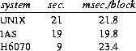

In most ways UNIX is a very conservative system. Only a handful of its ideas are genuinely new. In fact, a good case can be made that it is in essence a modern implementation of MIT's CTSS system [1]. This claim is intended as a compliment to both UNIX and CTSS. Today, more than fifteen years after CTSS was born, few of the interactive systems we know of are superior to it in ease of use; many are inferior in basic design.
UNIX was never a ``project;'' it was not designed to meet any specific need except that felt by its major author, Ken Thompson, and soon after its origin by the author of this paper, for a pleasant environment in which to write and use programs. Although it is rather difficult, after the fact, to try to account for its success, the following reasons seem most important.
This paper discusses the strong and weak points of the system and lists some areas where no effort has been expended. Only enough design details are given to motivate the discussion; more can be found elsewhere in this issue [4, 5].
One problem in discussing the capabilities and deficiencies of UNIX is that there no unique version of the system. It has evolved continuously both in time, as new functions are added and old problems repaired, and in space, as various organizations add features intended to meet their own needs. Four important versions of the system are in current use:
The proliferation of versions makes some parts of this paper hard to write, especially where details (e.g., how large can a file be?) are mentioned. Although compilation of a list of differences between versions of UNIX is a useful exercise, this is not the place for such a list, so the paper will concentrate on the properties of the system as it exists for the author, in the current Research version of the system.
The existence of several variants of UNIX is, of course, a problem not only when attempting to describe the system in a paper such as this, but also to the users and administrators. The importance of this problem is not lost upon the proprietors of the various versions; indeed, vigorous effort is underway to combine the best features of the variants into a single system.
The UNIX file system is simple in structure; nevertheless, it is more powerful and general than those often found even in considerably larger operating systems. Every file is regarded as a featureless, randomly-addressable sequence of bytes. The system conceals physical properties of the device on which the file is stored, such as the size of a disk track. The size of a file is the number of bytes it contains; the last byte is determined by the high-water mark of writes to the file. It is not necessary, nor even possible, to preallocate space for a file. The system calls to read and write each come in only one form, which specifies the local name of an open file, a buffer to or from which to perform I/O, and a byte count. I/O is normally sequential, so the first byte referred to by a read or write operation immediately follows the final byte transferred by the preceding operation. ``Random access'' is accomplished using a ``seek'' system call, which moves the system's internal read (or write) pointer for the instance of the open file to another byte that the next read or write will implicitly address. All I/O appears completely synchronous; read-ahead and write-behind are performed invisibly by the system.
This particularly simple way of viewing files was suggested by the Multics I/O system [8].
The addressing mechanism for files must be carefully designed if it is to be efficient. Files can be large (about 1010 bytes), are grown without pre-allocation, and are randomly accessible. The overhead per file must be small, because there can be many files (the machine on which this paper was written has about 27,000 on the disk storing most user's files); many of them are small (80 per cent have ten or fewer 512-byte blocks, and 37 per cent are only one block long). The details of the file-addressing mechanism are given elsewhere [5].
No careful study has been made of the efficiency of disk I/O, but a simple experiment suggests that the efficiency is comparable to two other systems, DEC's IAS for the PDP-11, and Honeywell's GCOS TSS system running on the H6070. The experiment consisted of timing a program that copied a file that, on the PDP-11, contained 480 blocks (245,760 bytes). The file on the Honeywell had the same number of bytes (each of nine bits rather than eight) but there were 1280 bytes per block. With otherwise idle machines, the real times to accomplish the file copies were

The real time per block of I/O observed under UNIX in this test was about 22 milliseconds. Because the system overhead per block is 6 milliseconds, most of which is overlapped, it would seem that the overall transfer rate of the copy might be nearly doubled if a block size of 1024 bytes were used instead of 512. There are some good arguments against making such a change. For example, space utilization on the disk would suffer noticeably: doubling the block size would increase the space occupied by files on the author's machine by about 15 per cent, a number whose importance becomes apparent when we observe that the free space is currently only 5 per cent of the total available. Increasing the block size would also force a decrease in the size of the system's buffer cache and lower its hit rate, but this effect has not been reliably estimated.
Moreover, the copy program is an extreme case in that it is totally I/O bound, with no processing of the data. Most programs do at least look at the data as it goes by; thus to sum the bytes in the file mentioned above required 10 seconds of real time, 5 of which were ``user time'' spent looking at the bytes. To read the file and ignore it completely required 9 seconds, with negligible user time. It may be concluded that the read-ahead strategy is almost perfectly effective, and that a program that spends as little as 50 microseconds per byte processing its data will not be significantly delayed waiting for I/O (unless, of course, it is competing with other processes for use of the disk).
The basic system interface conceals physical aspects of file storage, such as blocks, tracks, and cylinders. Likewise, the concept of a record is completely absent from the operating system proper and nearly so from the standard software. (By the term ``record'' we mean an identifiable unit of information consisting either of a fixed number of bytes or of a count together with that number of bytes.) A text file, for example, is stored as a sequence of characters with new-line characters to delimit lines. This form of storage is not only efficient in space when compared with fixed-length records, or even records described by character counts, but is also the most convenient form of storage for the vast majority of text-processing programs, which almost invariably deal with character streams. Most important of all, however, is the fact that there is only one representation of text files. One of the most valuable characteristics of UNIX is the degree to which separate programs interact in useful ways; this interaction would be seriously impaired if there were a variety of representations of the same information.
We recall with a certain horrified fascination a system whose Fortran compiler demanded as input a file with ``variable-length'' records each of which was required to be 80 bytes long. The prevalence of this sort of nonsense makes the following test of software flexibility (due to M. D. McIlroy) interesting to try when meeting new systems. It consists of writing a Fortran (or PL/I, or other language) program that copies itself to another file, then running the program, and finally attempting to compile the resulting output. Most systems eventually pass, but often only after an expert has been called in to mutter incantations that convert the data file generated by the Fortran program to the format expected by the Fortran compiler. In sum, we would consider it a grave imposition to require our users or ourselves, when mentioning a file, to specify the form in which it is stored.
For the reasons discussed above, UNIX software does not use the traditional notion of ``record'' in relation to files, particularly those containing textual information. But certainly there are applications in which the notion has use. A program or self-contained set of programs that generates intermediate files is entitled to use any form of data representation it considers useful. A program that maintains a large data base in which it must frequently look up entries may very well find it convenient to store the entries sequentially, in fixed-size units, sorted by index number. With some changes in the requirements or usual access style, other file organizations become more appropriate. It is straightforward to implement any number of schemes within the UNIX file system precisely because of the uniform, structureless nature of the underlying files; the standard software, however, does not include mechanisms to do it. As an example of what is possible, INGRES [9] is a relational data base manager running under UNIX that supports five different file organizations.
On each file system device such as a disk the accessing information for files is arranged in an array starting at a known place. A file may thus be identified by its device and its index within the device. The internal name of a file is, however, never needed by users or their programs. There is a hierarchically arranged directory structure in which each directory contains a list of names (character strings) and the associated file index, which refers implicitly to the same device as does the directory. Because directories are themselves files, the naming structure is potentially an arbitrary directed graph. Administrative rules restrict it to have the form of a tree, except that non-directory files may have several names (entries in various directories).
A file is named by a sequence of directories separated by ``/'' leading towards a leaf of the tree. The path specified by a name starting with ``/'' originates at the root; without an initial ``/'' the path starts at the current directory. Thus the simple name ``x'' indicates the entry ``x'' in the current directory; ``/usr/dmr/x'' searches the root for directory ``usr'', searches it for directory ``dmr'', and finally specifies ``x'' in ``dmr''.
When the system is initialized, only one file system device is known (the ``root device''); its name is built into the system. More storage is attached by ``mounting'' other devices, each of which contains its own directory structure. When a device is mounted, its root is attached to a leaf of the already-accessible hierarchy. For example, suppose a device containing a subhierarchy is mounted on the file ``/usr''. From then on, the original contents of /usr are hidden from view, and in names of the form ``/usr/...'' the ``...'' specifies a path starting at the root of the newly mounted device.
This file system design is inexpensive to implement, is general enough to satisfy most demands, and has a number of virtues: for example, device self-consistency checks are straightforward. It does have a few peculiarities. For example, instantaneously-enforced space quotas, either for users or for directories, are relatively difficult to implement (it has been done at one university site). Perhaps more serious, duplicate names for the same file (``links'') while trivial to provide on a single device, do not work across devices; that is, a directory entry cannot point to a file on another device. Another limitation of the design is that an arbitrary subset of members of a given directory cannot be stored on another device. It is common for the totality of user files to be too voluminous for a given device. It is then impossible for the directories of all users to be members of the same directory, say ``/usr''. Instead they must be split into groups, say ``/usr1'' and ``/usr2''; this is somewhat inconvenient, especially when space on one device runs out so that some users must be moved. The data movement can be done expeditiously, but the change in file names from ``/usr1/...'' to ``/usr2/...'' is annoying both to those people who must learn the new name and to programs that happen to have such names built into them.
Earlier variants of this file system design stored disk block addresses as 16-bit quantities, which limited the size of a file-system volume to 65,536 blocks. This did not mean that the rest of a larger physical device was wasted, because there could be several logical devices per drive, but the limitation did aggravate the difficulty just mentioned. Recent versions of the system can handle devices with up to about 16 million blocks.
UNIX goes to some pains to efface differences between ordinary disk files and I/O devices such as terminals, tape drives, and line printers. An entry appears in the file system hierarchy for each supported device, so that the structure of device names is the same as that of file names. The same read and write system calls apply to devices and to disk files. Moreover, the same protection mechanisms apply to devices as to files.
Besides the traditionally available devices, names exist for disk devices regarded as physical units outside the file system, and for absolutely addressed memory. The most important device in practice is the user's terminal. Because the terminal channel is treated in the same way as any file (for example, the same I/O calls apply), it is easy to redirect the input and output of commands from the terminal to another file, as explained in the next section. It is also easy to provide inter-user communication.
Some differences are inevitable. For example, the system ordinarily treats terminal input in units of lines, because character-erase and line-delete processing cannot be completed until a full line is typed. Thus if a program attempts to read some large number of bytes from a terminal, it waits until a full line is typed, and then receives a notification that some smaller number of bytes has actually been read. All programs must be prepared for this eventuality in any case, because a read operation from any disk file will return fewer bytes than requested when the end of the file is encountered. Ordinarily, therefore, reads from the terminal are fully compatible with reads from a disk file. A subtle problem can occur if a program reads several bytes, and on the basis of a line of text found therein calls another program to process the remainder of the input. Such a program works successfully when the input source is a terminal, because the input is returned a line at a time, but when the source is an ordinary file the first program may have consumed input intended for the second. At the moment the simplest solution is for the first program to read one character at a time. A more general solution, not implemented, would allow a mode of reading wherein at most one line at a time was returned no matter what the input source.*
The command interpreter, called the ``shell,'' is the most important communication channel between the system and its users. The shell is not part of the operating system, and enjoys no special privileges. A part of the entry for each user in the password file read by the login procedure contains the name of the program that is to be run initially, and for most users that program is the shell. This arrangement is by now commonplace in well-designed systems, but is by no means universal. Among its advantages are the ability to swap the shell even though the kernel is not swappable, so that the size of the shell is not of great concern. It is also easy to replace the shell with another program, either to test a new version or to provide a non-standard interface.
The full language accepted by the shell is moderately complicated, because it performs a number of functions; it is discussed in more detail elsewhere in this issue [10]. Nevertheless, the treatment of individual commands is quite simple and regular: a command is a sequence of words separated by white space (spaces and tabs). The first word is the name of the command, where a command is any executable file. A full name, with ``/'' characters, may be used to specify the file unambiguously; otherwise, an agreed-upon sequence of directories is searched. The only distinction enjoyed by a system-provided command is that it appears in a directory in the search path of most users. (A very few commands are built into the shell.) The other words making up a command line fall into three types:
The simple arguments are passed to the command as an array of strings, and thereafter are interpreted by that program. The fact that the arguments are parsed by the shell and passed as separate strings gives at least a start towards uniformity in the treatment of arguments; we have seen several systems in which arguments to various commands are separated sometimes by commas, sometimes by semicolons, and sometimes in parentheses; only a manual close at hand or a good memory tells which.
An argument beginning with ``<'' is taken to name a file that is to be opened by the shell and associated with the standard input of the command, namely the stream from which programs ordinarily read input; in the absence of such an argument, the standard input is attached to the terminal. Correspondingly, a file whose name is prefixed by ``>'' receives the standard output of commands; ``>>'' designates a variant in which the output is appended to the file instead of replacing it. For this mechanism to work it is necessary that I/O to a terminal be compatible with I/O to a file; the point here is that the redirection is specified in the shell language, in a convenient and natural notation, so that it is applicable uniformly and without exception to all commands. An argument specifying redirection is not passed to the command, which must go to some trouble even to discover whether redirection has occurred. Other systems support I/O redirection (regrettably, too few), but we know of none with such a convenient notation.
An argument containing a file name expansion character is turned into a sequence of simple arguments that are the names of files. The character ``*'', for example, means ``any sequence of zero or more characters;'' the argument ``*.c'' is expanded into a sequence of arguments that are the names of all files in the current directory whose names end with the characters ``.c''. Other expansion characters specify an arbitrary single character in a file name or a range of characters (the digits, say).
Putting this expansion mechanism into the shell has several advantages: the code only appears once, so no space is wasted and commands in general need take no special action; the algorithm is certain to be applied uniformly. The only convention required of commands that process files is to accept a sequence of file arguments even if the elementary action performed applies to only one file at a time. For example, the command that deletes a file could have been coded to accept only a single name, in which case argument expansion would be in vain; in fact, it accepts a sequence of file arguments (however generated) and deletes all of them. Only occasionally is there any difficulty. For example, suppose the command ``save'' transfers each of its argument files to off-line storage, so ``save *'' would save everything in the current directory; this works well. But the converse command ``restore'', which might bring all the named arguments back on-line, will not in general work analogously; ``restore *'' would bring back only the files that already exist in the current directory (match the ``*''), rather than all saved files.
One of the most important contributions of UNIX to programming is the notion of pipes, and especially the notation the shell provides for using them. A pipe is, in effect, an open file connecting two processes; information written into one end of the pipe may be read from the other end, with synchronization, scheduling, and buffering handled automatically by the system. A linear array of processes (a ``pipeline'') thus becomes a set of coroutines simultaneously processing an I/O stream. The shell notation for a pipeline separates the names of the various programs by a vertical bar, so for example
anycommand | sort | pr
The shell syntax for pipelines forces them to be linear, although the operating system permits processes to be connected by pipes in a general graph. There are several reasons for this restriction. The most important is the lack of a notation as perspicuous as that of the simple, linear pipeline; also, processes connected in a general graph can become deadlocked as the result of the finite amount of buffering in each pipe. Finally, although an acceptable (if complicated) notation has been proposed that creates only deadlock-free graphs, the need has never been felt keenly enough to impel anyone to implement it.
Other aspects of UNIX, not closely tied to any particular program, are also valuable in providing a pleasant user interface. One thing that seems trivial, yet makes a surprising difference once one is used to it, is full-duplex terminal I/O together with read-ahead. Even though programs generally communicate with the user in terms of lines, rather than single characters, full-duplex terminal I/O means that the user can type at any time, even if the system is typing back, without fear of losing or garbling characters. With read-ahead, one need not wait for a response to every line. A good typist entering a document becomes incredibly frustrated at having to pause before starting each new line; for anyone who knows what he wants to say any slowness in response becomes psychologically magnified if the information must be entered bit-by-bit instead of at full speed.
Both input and output of UNIX programs tends to be very terse. This can be disconcerting, especially to the beginner. The editor, for example, has essentially only one diagnostic, namely ``?'', which means ``you have done something wrong.'' Once one knows the editor, the error or difficulty is usually obvious, and the terseness is appreciated after a period of acclimation, but certainly people can be confused at first. However, even if some fuller diagnostics might be appreciated on occasion, there is much noise that we are happy to be rid of. The command interpreter does not remark loudly that each program finished normally, or announce how much space or time it took; the former fact is whispered by an unobtrusive prompt, and anyone who wishes to know the latter may ask explicitly.
Likewise, commands seldom prompt for missing arguments; instead, if the argument is not optional, they give at most a one-line summary of their usage and terminate. We know of some systems that seem so proud of their ability to interact that they force interaction on the user whether it is wanted or not. Prompting for missing arguments is an issue of taste that can be discussed in calm tones; insistence on asking questions may cause raised voices.
Although the terseness of typical UNIX programs is, to some extent, a matter of taste, it is also connected with the way programs tend to be combined. A simple example should make the situation clear. The command ``who'' writes out one line for each user logged into the system, giving a name, a terminal name, and the time of login. The command ``wc'' (for ``word count'') writes out the number of lines, the number of words, and the number of characters in its input. Thus
who | wc
The virtual address space of a process is divided into three regions: a read-only, shared program text region; a writable data area that may grow at one end by explicit request; and a stack that grows at automatically as information is pushed onto it by subroutine calls. The address space contains no ``control blocks.''
New processes are created by the ``fork'' operation, which creates a child process whose code and data are copied from the parent. The child inherits the open files of the parent, and executes asynchronously with it unless the parent explicitly waits for termination of the child. The fork mechanism is essential to the basic operation of the system, because each command executed by the shell runs in its own process. This scheme makes a number of services extremely easy to provide. I/O redirection, in particular, is a basically simple operation; it is performed entirely in the subprocess that executes the command, and thus no memory in the parent command interpreter is required to rescind the change in standard input and output. Background processes likewise require no new mechanism; the shell merely refrains from waiting for the completion of a command specified to be asynchronous. Finally, recursive use of the shell to interpret a sequence of commands stored in a file is in no way a special operation.
Communication by processes with the outside world is restricted to a few paths. Explicit system calls, mostly to do I/O, are the most common. A new program receives a set of character-string arguments from its invoker, and returns a byte of status information when it terminates. It may be sent ``signals,'' which ordinarily force termination, but may, at the choice of the process, be ignored or cause a simulated hardware interrupt. Interrupts from the terminal, for example, cause a signal to be sent to the processes attached to that terminal; faults such as addressing errors are also turned into signals. Unassigned signals may be used for communication between cooperating processes. A final, rather specialized, mechanism allows a parent process to trace the actions of its child, receiving notification of faults incurred and accessing the memory of the child. This is used for debugging.
There is thus no general inter-process communication or synchronization scheme. This is a weakness of the system, but it is not felt to be important in most of the uses to which UNIX is put (although, as discussed below, it is very important in other uses). Semaphores, for example, can be implemented by using creation and deletion of a known file to represent the P and V operations. Using a semaphore would certainly be more efficient if the mechanism were made a primitive, but here, as in other aspects of the design, we have preferred to avoid putting into the system new mechanisms that can already be implemented using existing mechanisms. Only when serious and demonstrable inefficiency results is it worth complicating the basic interfaces.
The reliability of a system is measured by the absence of unplanned outages, its ability to retain filed information, and the correct functioning of its software.
First, the operating system should not crash. UNIX systems generally have a good, though not impeccable, record for software reliability. The typical period between software crashes (depending somewhat on how much tinkering with the system has been going on recently) is well over a fortnight of continuous operation.
Two events--running out of swap space, and an unrecoverable I/O error during swapping--cause the system to crash ``voluntarily,'' that is, not as a result of a bug causing a fault. It turns out to be rather inconvenient to arrange a more graceful exit for a process that cannot be swapped. Occurrence of swap-space exhaustion can be made arbitrarily rare by providing enough space, and the current system refuses to create a new process unless there is enough room for it to grow to maximum size. Unrecoverable I/O errors in swapping are usually a signal that the hardware is badly impaired, so in neither of these cases do we feel strongly motivated to alleviate the theoretical problems.
The discussion below points out that overconsumption of resources other than swap space does occur, but generally does not cause a crash, although the system may not be very useful for a period of time. In most such cases a really general remedy is hard to imagine. For example, if one insists on using almost all of the file storage space for storing files, one is certain to run out of file space now and then, and a quota system is unlikely to be of much help, because the space is almost certainly overallocated. An automatically enforced file-space quota would help, however, in the case of the user who accidentally creates a monstrous file, or a monstrous number of small files.
Hardware is by far the most frequent cause of crashes, and in a basically healthy machine, the most frequent difficulty is momentary power dips, which tend to cause disks to go off line and the processor to enter peculiar, undocumented states. Other kinds of failures occur less often. It does seem characteristic of the PDP-11, particularly in large configurations, to develop transient, hard-to-diagnose Unibus maladies. It must be admitted, however, that the system is not very tolerant of malfunctioning hardware, nor does it produce particularly informative diagnostics when trouble occurs.
A reliable system should not lose or corrupt users' files. The operating system does not take any unusual precautions in this regard. Data destined to be written on the disk may remain in an associative memory cache for up to 15 seconds. Nevertheless the author's machine has ruined only three or four files in the past year, not counting files being created at the time of a crash. The rate of destruction of files by the system is negligible compared to that by users who accidentally remove or overwrite them. Nevertheless, the file system is insufficiently redundant to make recovery from a power dip, crash, or momentary hardware malfunction automatic. Frequent dumps guard against disaster (which has occurred--there have been head crashes, and twice a sick disk controller began writing garbage instead of what was asked.)
``Security'' means the ability to protect against unwanted accessing or destruction of data and against denial of service to others, for example by causing a crash. UNIX and much of its software were written in a rather open environment, so the continuous, careful effort required to maintain a fully secure system has not always been expended; as a result there are several security problems.
The weakest area is in protecting against crashing, or at least crippling, the operation of the system. Most versions lack checks for overconsumption of certain resources, such as file space, total number of files, and number of processes (which are limited on a per-user basis in more recent versions). Running out of these things does not cause a crash, but will make the system unusable for a period. When resource exhaustion occurs, it is generally evident what happened and who was responsible, so malicious actions are detectable, but the real problem is the accidental program bug.
The theoretical aspects of the situation are brighter in the area of information protection. Each file is marked with its owner and the ``group'' of users to which the owner belongs. Files also have a set of nine protection bits divided into three sets of three bits specifying permission to read, to write, or execute as a program. The three sets indicate the permissions applicable to the owner of the file, to members of the owner's group, and to all others.
For directories, the meaning of the access bits are modified: ``read'' means the ability to read the directory as a file, that is to discover all the names it contains; ``execute'' means the ability to search a directory for a given name when it appears as part of a qualified name; ``write'' means ability to create and delete files in that directory, and is unrelated to writing of files in the directory.
This classification is not fine enough to account for the needs of all installations, but is usually adequate. In fact, most installations do not use groups at all (all users are in the same group), and even those that do would be happy to have more possible user IDs and fewer group IDs. (Older versions of the system had only 256 of each; the current system has 65536, however, which should be enough.)
One particular user (the ``super-user'') is able to access all files without regard to permissions. This user is also the only one permitted to exercise privileged system entries. It is recognized that the very existence of the notion of a super-user is a theoretical, and often practical, blemish on any protection scheme.
An unusual feature of the protection system is the ``set-user-ID'' bit. When this bit is on for a file, and the file is executed as a program, the user number used in file permission checking is not that of the person running the program, but that of the owner of the file. In practice, the bit is used to mark the programs that perform the privileged system functions mentioned above (such as creation of directories, changing the owner of a file, and so forth).
In theory, the protection scheme is adequate to maintain security, but in practice breakdowns can easily occur. Most often these come from incorrect protection modes on files. Our software tends to create files that are accessible, even writable, by everyone. This is not an accident, but a reflection of the open environment in which we operate. Nevertheless, people in more hostile situations must adjust modes frequently; it is easy to forget, and in any case there are brief periods when the modes are wrong. It would be better if software created files in a default mode specifiable by each user. The system administrators must be even more careful than the users to apply proper protection. For example, it is easy to write a user program that interprets the contents of a physical disk drive as a file system volume. Unless the special file referring to the disk is protected, the files on it can be accessed in spite of their protection modes. If a set-user-ID file is writable, another user can copy his own program onto it.
It is also possible to take advantage of bugs in privileged set-user-ID programs. For example, the program that sends mail to other users might be given the ability to send to directories that are otherwise protected. If so, this program must be carefully written in order to avoid being fooled into mailing other people's private files to its invoker.
There are thus a number of practical difficulties in maintaining a fully secure system. Nevertheless, the operating system itself seems capable of maintaining data security. The word ``seems'' must be used because the system has not been formally verified, yet no security-relevant bugs are known (except the ability to run it out of resources, which was mentioned above). In some ways, in fact, UNIX is inherently safer than many other systems. For example, I/O is always done on open files, which are named by an object local to a process. Permissions are checked when the file is opened. The I/O calls themselves have as argument only the (local) name of the open file, and the specification of the user's buffer; physical I/O occurs to a system buffer, and the data is copied in or out of the user's address space by a single piece of code in the system. Thus there is no need for complicated, bug-prone verification of device commands and channel programs supplied by the user. Likewise, the absence of user ``data control blocks'' or other control blocks from the user's address space means that the interface between user processes and the system is rather easily checked, because is conducted by means of explicit arguments.
UNIX and the preponderance of its software are written in the C language [11]. An introduction to the language appears in this issue [12]. Because UNIX was originally written in assembly language, before C was invented, we are in a better position than most to gauge the effect of using a high-level language on writing systems. Briefly, the effects were remarkably beneficial and the costs minuscule by comparison. The effects cannot be quantized, because we do not measure productivity by lines of code, but it is suggestive to say that UNIX offers a good deal of interesting software, ranging from parser-generators through mathematical equation-formatting packages, that would never have been written at all if their authors had had to write assembly code; many of our most inventive contributors do not know, and do not wish to learn, the instruction set of the machine.
The C versions of programs that were rewritten after C became available are much more easily understood, repaired, and extended than the assembler versions. This applies especially to the operating system itself. The original system was very difficult to modify, especially to add new devices, but also to make even minor changes. The C version is readily modifiable by comparison, and not only by us; more than one university, for example, has completely rewritten the typewriter device driver to suit its own taste. (Paradoxically, the fact that the system is easy to modify causes some annoyance, in the form of variant versions.)
An extremely valuable, though originally unplanned, benefit of writing in C is the portability of the system. The transportation of UNIX from the PDP-11 to the Interdata 8/32 is discussed in another paper [13]. It appears to be possible to produce an operating system and set of software that runs on several machines and whose expression in source code is, except for a few modules, identical on each machine. The payoff from such a system, either to an organization that uses several kinds of hardware or to a manufacturer who produces more than one line of machines, should be evident.
Compared to the benefits, the costs of using a high-level language seem negligible. Certainly the object programs generated by the compiler are somewhat larger than those that would be produced by a careful assembly-language coder. It is hard to estimate the average increase in size, because in rewriting it is difficult to resist the opportunity to redesign somewhat (and usually improve). A typical inflation factor for a well-coded C program would be about 20-40 percent. The decrease in speed is comparable, but can sometimes be larger, mainly because subroutine linkage tends to be more costly in C (just as in other high-level languages) than in assembly programs. However, it is by now a matter of common knowledge that a tiny fraction of the code is likely to consume most of the time, and our experience certainly confirms this belief. A profiling tool for C programs has been useful in making heavily-used programs acceptably fast by directing the programmer's attention to the part of the program where particularly careful coding is worth while.
The above guesses of space and time inflation for C programs are not based on any comprehensive study. Although such a study might be interesting, it would be somewhat irrelevant, in that no matter what the results turned out to be, they would not cause us to start writing assembly language. The operating system and the important programs that run under it are acceptably efficient as they are. This is not to say, of course, that efforts to improve the code generation of the C compiler are in vain. It does mean that we have come to view the operating system itself, as well as other ``system programs'' such as editors, compilers, and basic utilities, as just as susceptible to expression in a high-level language as are the Fortran codes of numerical mathematics or the Cobol programs of the business world.
In assessing the costs of using C, the cost of the compilations themselves has to be considered. This too we deem acceptable. For example, to compile and link-edit the entire operating system (``sysgen'') takes somewhat over nine minutes of clock time (of which seven minutes are CPU time); the system consists of about 12,500 lines of C code, leading to a rate of about 22 lines per second from source to executable object on a PDP-11/70. The compiler is faster than this figure would indicate; the system source makes heavy use of ``include'' files, so the actual number of lines processed by the compiler is 38,000 and the rate is 65 lines per second.
These days all the best authorities advocate the use of a high-level language, so UNIX can hardly be accused of starting a revolution with this as its goal. Still, not all of those who actually produce systems have leaped on the bandwagon. Perhaps UNIX can help provide the required nudge. In its largest PDP-11 configurations, it serves 48 simultaneous users (which is about twice the number that the hardware manufacturer's most nearly comparable system handles); in a somewhat cut-down version, still written in C and still recognizable as the same system, it occupies 8K words and supports a single user on the LSI-11 microcomputer.
A number of facilities provided in other systems are not present in UNIX. Many of these things would be useful, or even vital, to some applications--so vital, in fact, that several variant versions of the system, each implementing some subset of the possible facilities mentioned below, are extant. The existence of these variants is in itself a good argument for including the new extensions, perhaps somewhat generalized, in a unified version of the system. At the same time, it is necessary to be convinced that a proposed extension is not merely a too-narrowly conceived, isolated ``feature'' that will not mesh well with the rest of the system. It is also necessary to realize that the limited address space of the PDP-11, the most common UNIX host, imposes severe constraints on the size of the system.
UNIX is not a ``real-time'' system in the sense that it is not possible to lock a process in memory so as to guarantee rapid response to events, nor to connect directly to I/O devices. MERT[14], in a sense a generalization of UNIX, does allow these operations and in fact all those mentioned in this section. It is a three-level system, with a kernel, one or more supervisor processes, and user processes. One of the standard supervisor processes is a UNIX emulator, so that all the ordinary UNIX software is available, albeit with somewhat degraded efficiency.
There is no general inter-process message facility, nor even a limited communication scheme such as semaphores. It turns out that the pipe mechanism mentioned above is sufficient to implement whatever communication is needed between closely-related, cooperating processes; ``closely-related'' means processes with a common ancestor that sets up the communication links. Pipes are not, however, of any use in communicating with daemon processes intended to serve several users. At some of the sites at which UNIX is run a scheme of ``named pipes'' has been implemented. This involves a named file read by a single process that delays until messages are written into the file by anyone (with permission to do so) who cares to send a message.
Input and output ordinarily appear to be synchronous; programs wait until their I/O is completed. For disk files, read-ahead and write-behind are handled by the operating system. The mechanisms are efficient enough, and the simplification in user-level code large enough, that we have no general doubts about the wisdom of doing things in this way. There remain special applications in which one desires to initiate I/O on several streams and delay until the operation is complete on only one of them. When the number of streams is small, it is possible to simulate this usage with several processes. However, the writers of a UNIX NCP (``network control program'') interface to the ARPANET [15] feel that genuinely asynchronous I/O would improve their implementation significantly.
Memory is not shared between processes, except for the (read-only) program text. Partly to alleviate the restrictions on the virtual address space imposed by the PDP-11, and partly to simplify communication among tightly-coupled but asynchronous processes, the controlled sharing of writable data areas would be valuable to some applications. The limited virtual address space available on the PDP-11 turns out to be of particular importance. A number of projects that use UNIX as a base desire better interprocess communication (both by means of messages and by sharing memory) because they are driven to use several processes for a task that logically requires only one. This is true of several Bell System applications and also of INGRES[9].
UNIX does not attempt to assign non-sharable devices to users. Some devices can only be opened by one process, but there is no mechanism for reserving devices for a particular user for a period of time or over several commands. Few installations with which we have communicated feel this to be a problem. The line printer, for example, is usually dedicated to a spooling program, and its direct use is either forbidden or managed informally. Tapes are always allocated informally. Should the need arise, however, it is worth noting that commands to assign and release devices may be implemented without changing the operating system. Because the same protection mechanism applies to device files as to ordinary files, an ``assign'' command could operate essentially by changing the owner identification attached to the requested device to that of the invoker for the duration of usage.
The following points are earnestly recommended to designers of operating systems:
Much, even most, of the design and implementation of UNIX is the work of Ken Thompson. My use of the term ``we'' in this paper is intended to include him; I hope his views have not been misrepresented.